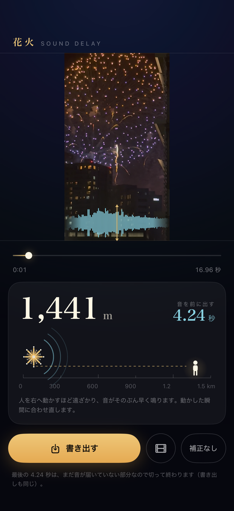
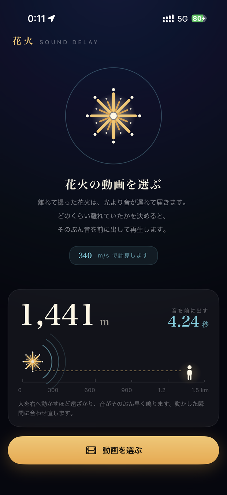
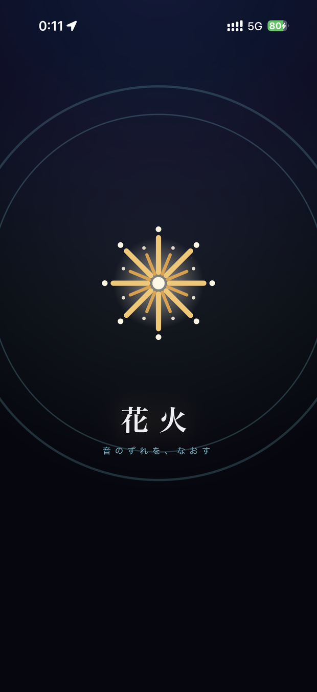

離れて撮った花火の動画は、光より音が遅れて届きます。
どのくらい離れていたかを決めるだけ。
そのぶん音を前に出して再生し、直したまま1本に書き出せます。
みっつだけ
写真の中から、花火を撮った動画を選びます。アプリが触れるのは選んだ1本だけです。
花火から自分までの距離をバーで動かします。動かした瞬間に音が合わせ直され、再生は止まりません。0〜1,500m まで。
直したとおりに1本の動画へ焼いて、写真に保存します。もとの動画はそのまま残ります。
目で見て決められる
映像の下に音の形が右から左へ流れます。破裂音の山が中央の線に乗ったとき、その音が耳に届いています。花火が開いた瞬間に山が線へ来るよう距離を合わせれば、それが正解です。
音を前に出すと、最後の数秒は「まだ音が届いていない」ぶんになります。無音を垂れ流さず、そこで終わらせます。終わりぎわは音を絞ってぶつ切りにしません。
スクリーンショット



動画は外へ出ません
このアプリは、あなたの情報を集めません。動画の読み込み・補正・書き出しはすべて iPhone の中だけで行われ、 動画や音声がどこかへ送信されることはありません。アカウントも、解析もありません。 無料で配るために、書き出し（写真への保存）のときだけ Google AdMob の広告を表示します。最初の2本は広告なしで書き出せます。 くわしくはプライバシーポリシーをご覧ください。